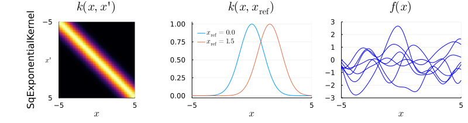
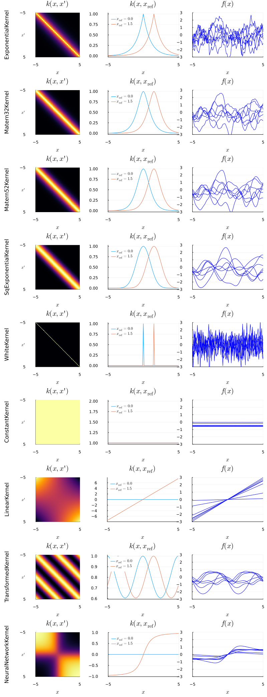

Gaussian process prior samples

You are seeing the HTML output generated by Documenter.jl and Literate.jl from the Julia source file. The corresponding notebook can be viewed in nbviewer.
The kernels defined in this package can also be used to specify the covariance of a Gaussian process prior. A Gaussian process (GP) is defined by its mean function $m(\cdot)$ and its covariance function or kernel $k(\cdot, \cdot')$:
\[ f \sim \mathcal{GP}\big(m(\cdot), k(\cdot, \cdot')\big)\]
In this notebook we show how the choice of kernel affects the samples from a GP (with zero mean).
# Load required packages
using KernelFunctions, LinearAlgebra
using Plots, Plots.PlotMeasures
default(; lw=1.0, legendfontsize=8.0)
using Random: seed!
seed!(42); # reproducibilityEvaluation at finite set of points
The function values $\mathbf{f} = \{f(x_n)\}_{n=1}^N$ of the GP at a finite number $N$ of points $X = \{x_n\}_{n=1}^N$ follow a multivariate normal distribution $\mathbf{f} \sim \mathcal{MVN}(\mathbf{m}, \mathrm{K})$ with mean vector $\mathbf{m}$ and covariance matrix $\mathrm{K}$, where
\[\begin{aligned} \mathbf{m}_i &= m(x_i) \\ \mathrm{K}_{i,j} &= k(x_i, x_j) \end{aligned}\]
with $1 \le i, j \le N$.
We can visualize the infinite-dimensional GP by evaluating it on a fine grid to approximate the dense real line:
num_inputs = 101
xlim = (-5, 5)
X = range(xlim...; length=num_inputs);Given a kernel k, we can compute the kernel matrix as K = kernelmatrix(k, X).
Random samples
To sample from the multivariate normal distribution $p(\mathbf{f}) = \mathcal{MVN}(0, \mathrm{K})$, we could make use of Distributions.jl and call rand(MvNormal(K)). Alternatively, we could use the AbstractGPs.jl package and construct a GP object which we evaluate at the points of interest and from which we can then sample: rand(GP(k)(X)).
Here, we will explicitly construct samples using the Cholesky factorization $\mathrm{L} = \operatorname{cholesky}(\mathrm{K})$, with $\mathbf{f} = \mathrm{L} \mathbf{v}$, where $\mathbf{v} \sim \mathcal{N}(0, \mathbf{I})$ is a vector of standard-normal random variables.
We will use the same randomness $\mathbf{v}$ to generate comparable samples across different kernels.
num_samples = 7
v = randn(num_inputs, num_samples);Mathematically, a kernel matrix is by definition positive semi-definite, but due to finite-precision inaccuracies, the computed kernel matrix might not be exactly positive definite. To avoid Cholesky errors, we add a small "nugget" term on the diagonal:
function mvn_sample(K)
L = cholesky(K + 1e-6 * I)
f = L.L * v
return f
end;Visualization
We now define a function that visualizes a kernel for us.
function visualize(k::Kernel)
K = kernelmatrix(k, X)
f = mvn_sample(K)
p_kernel_2d = heatmap(
X,
X,
K;
yflip=true,
colorbar=false,
ylabel=string(nameof(typeof(k))),
ylim=xlim,
yticks=([xlim[1], 0, xlim[end]], ["\u22125", raw"$x'$", "5"]),
vlim=(0, 1),
title=raw"$k(x, x')$",
aspect_ratio=:equal,
left_margin=5mm,
)
p_kernel_cut = plot(
X,
k.(X, 0.0);
title=string(raw"$k(x, x_\mathrm{ref})$"),
label=raw"$x_\mathrm{ref}=0.0$",
legend=:topleft,
foreground_color_legend=nothing,
)
plot!(X, k.(X, 1.5); label=raw"$x_\mathrm{ref}=1.5$")
p_samples = plot(X, f; c="blue", title=raw"$f(x)$", ylim=(-3, 3), label=nothing)
return plot(
p_kernel_2d,
p_kernel_cut,
p_samples;
layout=(1, 3),
xlabel=raw"$x$",
xlim=xlim,
xticks=collect(xlim),
)
end;We can now visualize a kernel and show samples from a Gaussian process with a given kernel:
plot(visualize(SqExponentialKernel()); size=(800, 210), bottommargin=5mm, topmargin=5mm)
Kernel comparison
This also allows us to compare different kernels:
kernels = [
Matern12Kernel(),
Matern32Kernel(),
Matern52Kernel(),
SqExponentialKernel(),
WhiteKernel(),
ConstantKernel(),
LinearKernel(),
compose(PeriodicKernel(), ScaleTransform(0.2)),
NeuralNetworkKernel(),
]
plot(
[visualize(k) for k in kernels]...;
layout=(length(kernels), 1),
size=(800, 220 * length(kernels) + 100),
)
This page was generated using Literate.jl.